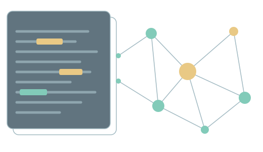

Python foundations
Python values, types and text
Interactive page: outline
Explore lessonDigital Humanities · Master's studies
Language, data and computational methods. Explore how digital texts become evidence for humanities research.
DE0823 · formerly ETH713 · technical teaching block

Week 05 is a complete interactive lesson. Seven other lesson outlines remain available; the 2026 notebooks for technical weeks 3–5 are ready to open. Later topics and timing are provisional.
Current teaching focus: web scraping (25 November 2026)Learning sequence
Numbers refer to the computational block, not full semester weeks. Start with the foundations or revisit a specific method.
Python values, types and text
Interactive page: outline
Explore lessonA reproducible computational workflow
Interactive page: outline
Explore lessonFrom text to tokens and word frequencies
Interactive page: outline
Explore lessonFrom serialized text to structured discourse data
Interactive page: outline
Explore lessonFrom HTML documents to structured records
Interactive page: complete · Version 2
Explore lessonConcordances, n-grams and contextual patterns
Interactive page: outline
Explore lessonComputational interpretation of evaluative language
Interactive page: outline
Explore lessonResearch design, evidence and reproducibility
Interactive page: outline
Explore lessonRead concepts and use browser-based demonstrations as they are released.
Open the canonical notebooks in Google Colab to execute Python and inspect results.
Connect computational choices to research questions, provenance, limitations and evidence.
Planned standalone analytical experiments.
Notebooks, documentation, tools and research guidance.
Existing sample data and provenance notes.